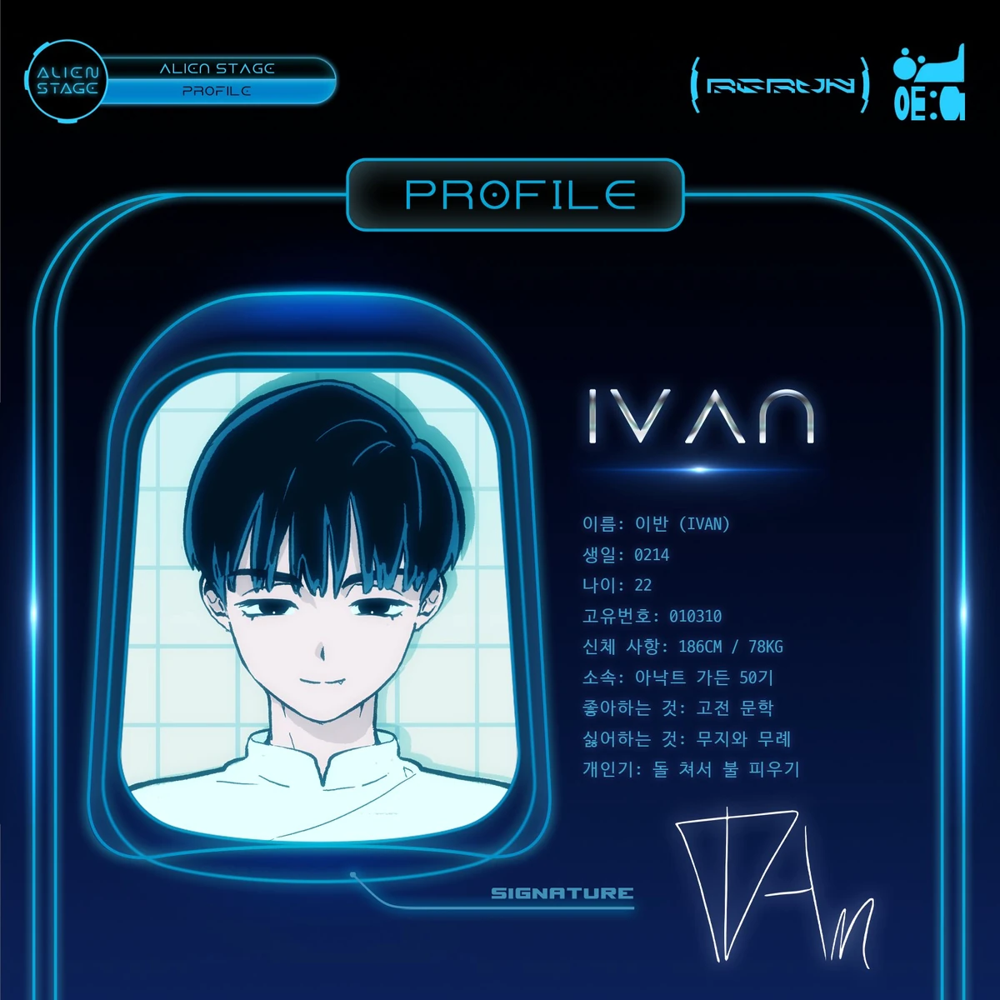

Yearning for the one just out of reach. A stage designed similarly close to the planet, Saturn, one who is surrounded and popular, yet so isolated from the others.

고개를 저어도 늘 같은 자리 닿지 않는 너, 나 홀로 상상해 빛이 나는 너, 옆에 선 나
So black, black as it can be 다가가면 갈수록 깊어지는 dark sea
Like a black, black sorrow A story of such woe 이 이야기의 끝에는 피로 물든 시린 자리와 텅 빈 공기뿐
너의 눈길이 닿는 곳에, 네 손끝 스칠 곳에 하염없이 너만을 기다리고 검은 어둠 속 붉은빛 모래시계를 돌려 긴 시간을 너와
So black, black as it can be 다가가면 갈수록 깊어지는 dark sea Like a black, black sorrow
A story of such woe 이 이야기의 끝에는 피로 물든 시린 자리와 텅 빈 Such black, black sorrow 그리고 너
언제나 나에겐 너 black sorrow 나에겐 너 black sorrow 나에겐 너 black sorrow